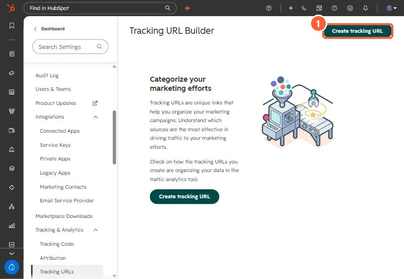

Short answer
Settings, Tracking & Analytics, Tracking URLs builds and stores links with UTM parameters for campaign, source, medium, term and content. Copy the full or short URL from Actions, or build one from a campaign so it uses the campaign's UTM value. If a tracked link shows no sessions, check the report's time frame, that the destination page has the tracking code, and that the URL is formatted correctly.
1. The builder


2. Fields
- Campaign and Source decide where the visit is bucketed.
- Medium is optional, typically the specific ad, post or email.
- Term is optional, for paid keywords.
Social posts published through HubSpot already get tracking, and you cannot use custom tracking URLs there. Connected ad accounts can add UTMs automatically. See connecting ad accounts.
3. No sessions?
Widen the date range, confirm the tracking code is on the destination page, and check the URL. Campaigns with contacts but no sessions are covered in campaign shows zero sessions.